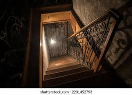
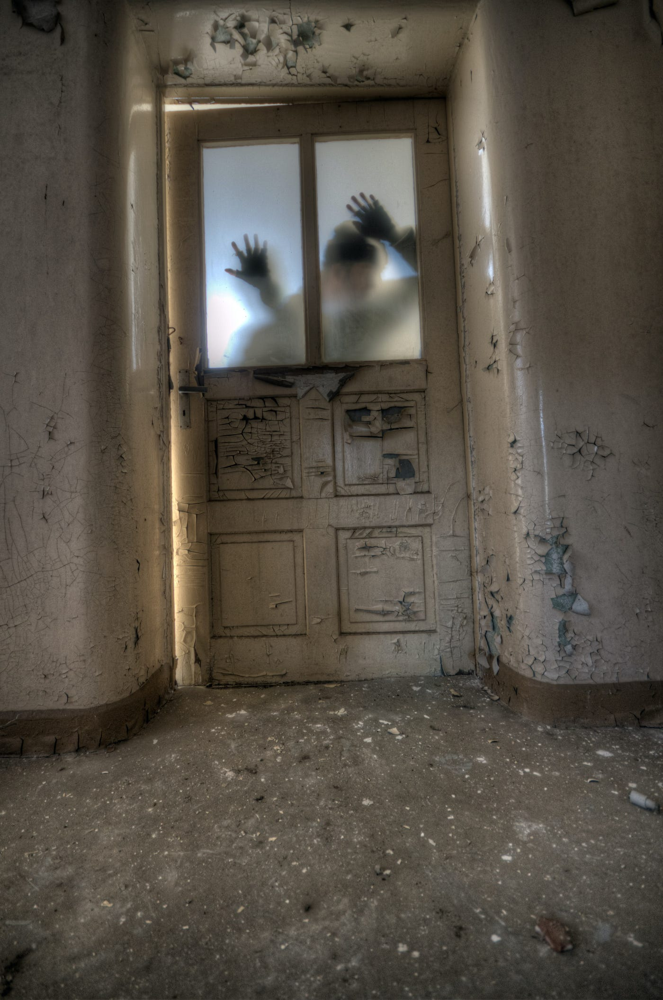

You head through the hallway the sounds of the undead just oustide these wall on the road are making you more and more nervous due to how loud the outside is compared to inside where you find no one and no undead?
after walking for a few minutes you think to yourself how long this hallway is but the second you think that you come across two doors the left that leads downstairs but dosen't say where and the door to the right is closed but you hear murmurs
Which door to will you pick?
 